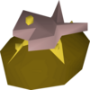

A tuna potato is member only food requiring 68 Cooking to make and grants a total of 309.5 Cooking experience once all preparation steps are complete. They are considered one of the best foods as they restore 22 hitpoints, the highest of single-bite foods, along with dark crab and manta ray — as well as anglerfish with 93+ Hitpoints. At 0.5kg each, tuna potatoes weigh slightly more than manta rays (0.4 kg) and dark crabs (0.3 kg).
Ingredients:
- A potato
- Raw sweetcorn
- Bucket of milk OR pot of cream
- A bowl
- A knife
Procedure:
- Cook a raw potato on a range to make a baked potato
- Churn a bucket of milk or pot of cream into a pat of butter
- Use the butter on the baked potato to make a potato with butter
- Cook raw tuna on a range to make tuna
- Cook sweetcorn on a range to make cooked sweetcorn
- Use the tuna on a bowl, with a knife, to make chopped tuna
- Use the sweetcorn on the chopped tuna to make tuna and corn
- Use the tuna and corn on the potato with butter to make a tuna potato